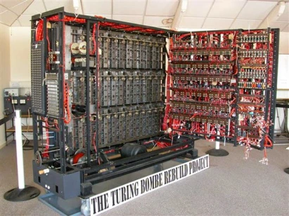

1936 - Maquina de Turing
Alan Turing, considerado o "Pai da Computação", mostrou que as operações de leitura, escrita e exclusão de símbolos binários poderiam ser realizadas por uma máquina que continha uma fita de comprimento ilimitado, com quadrados de tamanho definido e um dispositivo de número finito de estados, que realizava as operações na fita.
A Maquina não foi executada em sua totalidade pelo autor, porém sua teoria deu inicio ao processo computacional moderno.

A importância de Turing na computação e inteligência artificial reside em sua conceituação da máquina de Turing, um modelo teórico que demonstrou a possibilidade de realizar qualquer cálculo computacional por meio de regras e armazenamento de dados. Este conceito é fundamental para entender o funcionamento dos computadores e teve uma influência significativa no desenvolvimento da inteligência artificial. Apesar das dificuldades pessoais que enfrentou, Alan Turing é lembrado como uma figura crucial na história da computação e criptografia.